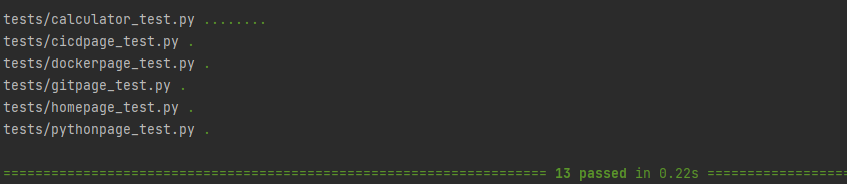

AAA Testing is simply an acronym for "Arrange, Act, Assert". This method of testing is super important for programmers to know since while a program might be running smooth with seemingly no errors, there can be logic errors that we can encounter. We've created a simple calculator application to demonstrate all the topics that this portion of the website will talk about. First, let's talk about the structure of the AAA structure.
Pytest recognizes the AAA structure as followed:
from calculator import Calculator This says "from the calculator library, grab the Calculator class".def test_calculator_add_method(): This creates the method for Pytest to check (This is simple addition)."""Testing the Calculator""" This is a docstring, simply tells both Pytest and the programmer what this method doescalculator = Calculator() This is simply creating an instance of Calculator, we'll talk more about this in OOPassert calculator.add(1,1) == 2 Asserting is another way saying "Make sure that this result is correct, throw an error if it's not".
from calculator import Calculator It's important before any testing can even start to import the class that you are testing, you only have to do this once, and
it must be the first line of code you write in a pytest related code. This isn't always the case like For this case, we are working with the calculator app included in this repository. You can download
it and follow along from my GitHub page: https://github.com/KirwinAl/flask/tree/improved_calc.
Instructions to clone it on Docker is under Project 1: Docker or click here.
def test_calculator_add_method(): This is creating a method that creates a namespace for whatever we need it for. We're using it for making a quick addition
test.
calculator = Calculator() This is a constructor was instantiated into this current method. So, any methods related to calculator will be contained here. This will be
a concept that I'll talk about in OOP.
assert calculator.add(1,1) == 2 This is the last A in AAA, assertion. Asserting like said above is saying "make sure this is the result". This is incredibly important for
testing the logic behind your code. Without this, a program can still run with what seems like no problems, but it can have 2+2 = 5 if you are not attentive enough while coding. While I'm
not saying to be completely aware while coding, AAA testing can help find issues.
This is how it would show:
Pytest is helpful enough to show you which method has the issue which narrows down your work on finding a bug/error, and you focus on fixing them to have your tests looking all green like this:
